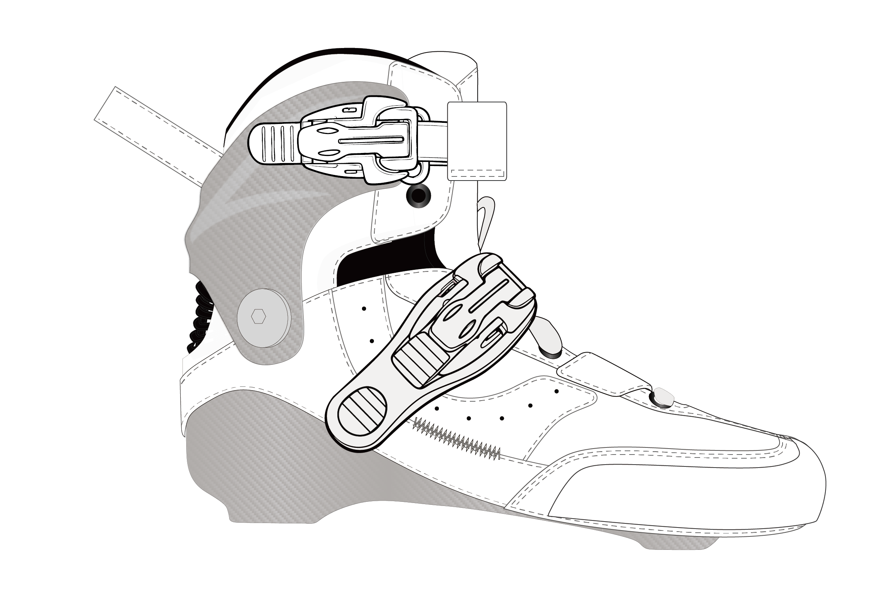

描线图
给人看的轮廓/裁片参考，只告诉设计师边界在哪里；不能直接拿来做网页换色。
填充蒙版
给程序用的透明区域图，白色代表可换色区域，透明代表不受影响；必须和 base 同画布。
最终效果
程序把颜色/材质图放进填充蒙版，再叠在 base 上。描线图不参与运行时渲染。

给人看的轮廓/裁片参考，只告诉设计师边界在哪里；不能直接拿来做网页换色。
给程序用的透明区域图，白色代表可换色区域，透明代表不受影响；必须和 base 同画布。
程序把颜色/材质图放进填充蒙版，再叠在 base 上。描线图不参与运行时渲染。
